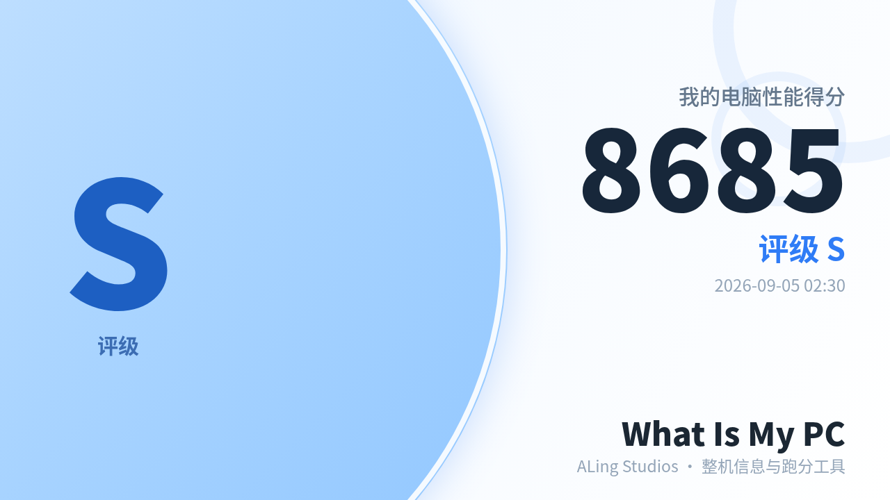
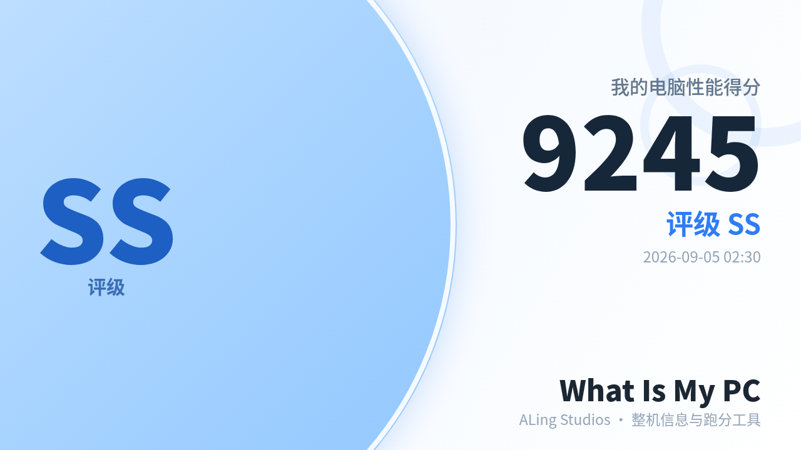
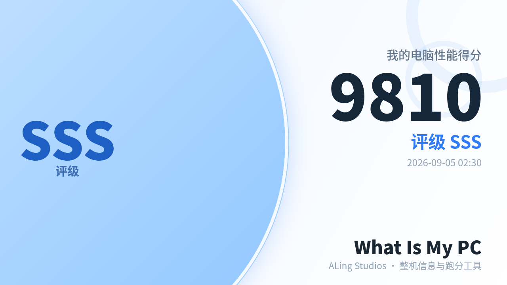
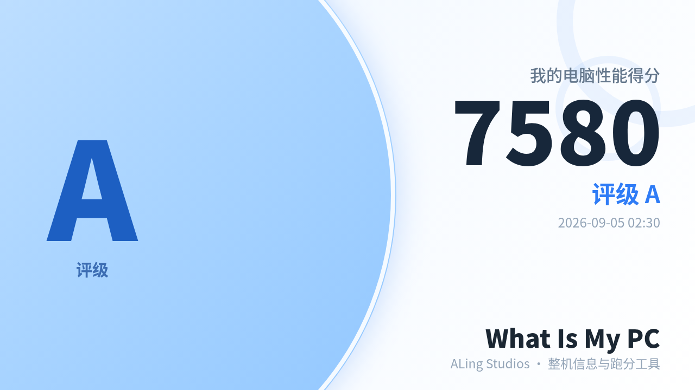

最新版本 V0.1b | 支持 Win10/11

一键获取CPU、主板、内存、显卡等所有核心硬件的详细规格。点击部件名称，还可联网查询官方信息，深入了解你的设备。
以熟悉的任务管理器风格，实时展示CPU、内存、GPU、磁盘的占用率、温度及S.M.A.R.T.健康状态，系统状况一目了然。
内置CPU、内存、磁盘、GPU五项基准测试，生成总分与D~SSS评级。支持一键生成分享图，轻松与朋友比拼性能。
跑分完成后，一键生成属于你的性能分享图



单文件绿色版，无需安装，下载后即可使用。
版本 V0.1b | 文件大小: 2.7 MB | 支持: Windows 10/11 (x64)